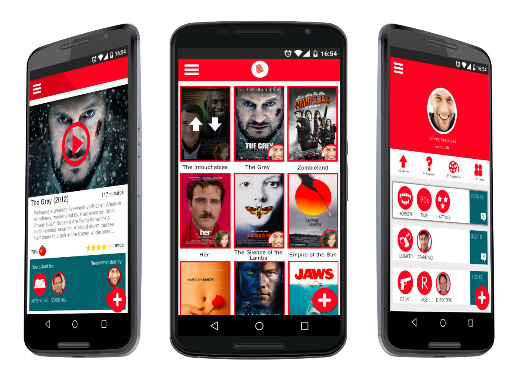
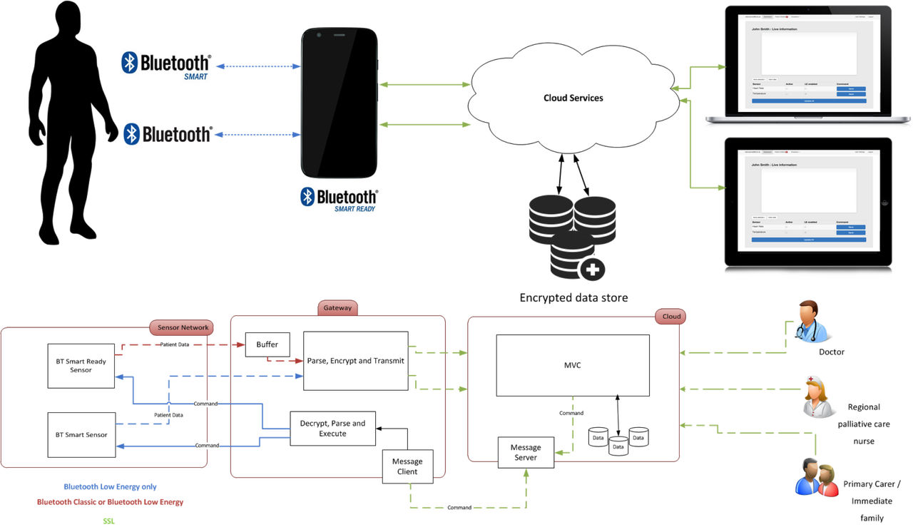
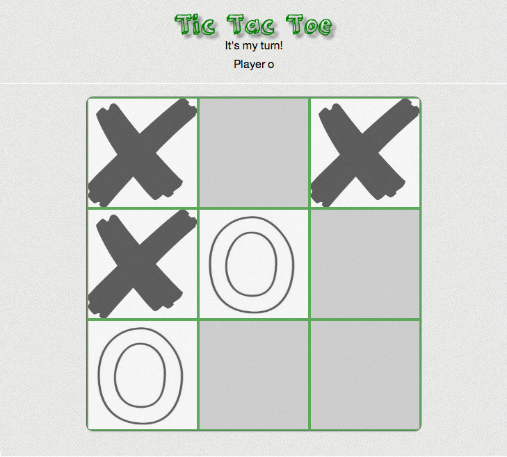

Mobile Travel Technologies (MTT)
MTT are a software company that specialize in mobile apps, mobile web and mobile technology products for airlines, travel management companies, OTAs and hotels. They have customers such as: EasyJet, Saudia Airlines, Singapore Airlines, BCD, and LATAM.
Concierge Live
MTT Concierge Live is a real-time mobile travel assistant that obtains a passenger's relevant trip information in order to provide guidance through every step of the journey. Concierge Live exists as a software widget that is embedded within your existing mobile application.
As part of a small scrum product team, I assumed role as server side developer for the pilot of the Concierge Live Product. Being part of MTT's product team meant that the components and services that we built had to be very robust and maintainable. This meant that code reviews, architecture/design sessions, and pairing played a large role in our development processes. My main responsibility for Concierge Live was building, configuring and maintaining Spring Boot web services. Some of the main technologies used were Groovy, Spring Boot, Cucumber, Thymeleaf and MongoDB.
For more information on the product itself, please see MTT's press release on the Concierge Live product.
Automation Deployment (Ansible)
Ansible is an automation platform used to provide provisioning, deployment and configuration management capabilities. Ansible provides functionality through scripts called playbooks.
In Ansible terms, a playbook is a list of plays where each play must contain:- A set of hosts (remote server instances) to configure
- An ordered list of tasks to be executed on those hosts
- Provision AWS instances
- Deploy products and components to the new instances
- Setup a broker, AWS elbs and a DNS
- Terminate environments
TellMeWhatToWatch
TellMeWhatToWatch (name is a work in progress) is a social mobile platform for friends to recommend viewing content to each other in real time.
Looking for something to watch? Something funny or something more specific such as a movie starring Bob Odenkirk released before the year 2000 with a rating of at least 4 stars? - Hit up your group of friends and see what they find or what they suggest. You can accept their recommendation, awarding that friend a new point (serious bragging rights!). Or you could just skip all that and we'll use our own smarts to find something for you. Either way, you'll find something great to watch.
TellMeWhatToWatch is currently in early development for the Android platform.
Dissertation Telemedicine application
The following is taken from the abstract section of my dissertation:
"Telemedicine is an important practice that removes the necessity for physical encounters between patients and physicians. Combined with the capabilities of remote monitoring systems, a patient can be monitored using physiological sensors which seamlessly gather data. Using an Internet of Things (IoT) model, non-invasive physiological sensors that capture a patient's current health status can be exposed through a Telemedicine platform. By closely monitoring patient's vital signs, physicians can capture a snapshot of a patient's well being. This is an important factor in the lives of palliative care patients, where focus is placed on quality of life.
This dissertation outlines a secure, cloud-enabled Telemedicine solution aimed at the field of palliative medicine. This dissertation plans to expose the Bluetooth 4.0 protocol in order to provide a multi-stream data transmission protocol of low and high bit-rate data. Use of an adaptive data stream enables efficient sensor traffic with capabilities of complex sensor data transmission in emergency situations and low bandwidth data that can provide episodic updates. Each patient sensor makes use of a gateway to transmit information to a cloud based service, which publishes current and historic data for individual patients. Secure storage, access and transmission of patient data is also an important concern. This dissertation outlines two security mechanisms using a combination of symmetric and asymmetric cryptography."
The following is a high-level overview of the system architecture:
The prototype Bluetooth hardware is designed using a combination of Bluetooth Low Energy and Bluetooth Classic modules. RedBearLab's BLE shield provides all Bluetooth Low Energy functionality, while the ConnectBlue OBS421 chip provides Bluetooth Classic. Both chips are integrated using the Arduino platform (written in C), meaning that both Bluetooth protocols can be used concurrently. Together, this hardware forms the basis for a smart sensor that is capable of transmitting over low and high bit rate streams in parallel. This ensures efficient and high throughput transmission of patient data.
The sensor gateway exposes the sensor streams to the cloud by routing the traffic securely and efficiently by communicating both Bluetooth and IP (Internet Protocol). The gateway is designed to function as a Bluetooth Smart Ready mobile phone.
The cloud application serves as a platform that provides data access to caregivers while also leveraging control over the patient's remote sensor network. The technology behind the application is industry standard - Java, Spring MVC, Hibernate, Bootstrap 3 to provide a rich, secure, user interface (UI)-centric, and scalable application.
Bullet
With a combined total of 10 months at Bullet, I worked on many different parts of the Bullet Accounts product. As such a small startup at the time, I worked closely with the CTO and was given a lot of responsibility.
In order to integrate with one of Ireland's largest online marketplaces Adverts.ie, I designed and implemented a RESTful API for the Bullet Accounts product. Another feature I developed was Bank Reconciliation (the process of confirming the bank balance as shown in one's bank balancing statement and the corresponding amount in an organisation's own accounting records). The feature allows a user to upload a bank statement and the feature applies matching rules to each transaction so that they can be reconciled with the information in Bullet.
Here's a screenshot taken from Bullet's transaction reconciliation process:
DeathRun
Death run is a multiplayer split screen game where players have to race each other to the top of the slope whilst trying to avoid multiple different oncoming objects. The first player to reach the top of the platform wins the game. I got inspiration for this game from the Zombie Master mod for Half Life 2. The following is an in-game shot:

In the future I hope to work on adding a third player, whose role will be to manually control the obstacles in order to prevent the other players from reaching the top. I also plan to port the project to OpenGL ES so that the game can run on mobile devices.
HTML5 Cypto Tic Tac Toe
I developed this game for one of the assignments in an Advanted Telecommunications course I took in third year of university. Having done a HTML5 minesweeper game using the HTML5 canvas a few months previously, I decided to go a bit further by integrating with NodeJS.

Embedded Systems programming
During my masters I worked with the LPC2468 microcontroller developing various small-scale embedded systems making use of peripheral modules and devices such as interrupt controllers, serial communication devices, LCD and touchscreen controllers and analogue-to-digital converters. I also did some further work using a real-time operating system (FreeRTOS).
In my spare time I also enjoy hacking around with the Arduino and Raspberry Pi platforms. Because of multiple break-ins around my street I decided to start building a small security surveillance system. I'll be sure to track the progress I make in my blog as I build it.